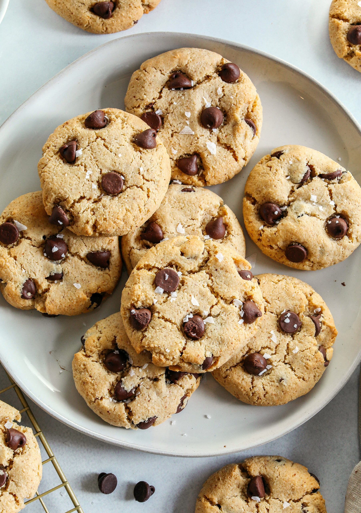

Chocolate Chip Cookies

Description
Fresh baked chocolate chip cookies that
melt in your mouth when you sink your
teeth into them. An american staple
desert that is easy to make at home!
Ingredients
- 2 cups all-purpose flour
- 1/2 teaspoon baking soda
- 1 cup packed brown sugar
- 3/4 cup unsalted butter, melted
- 1/2 cup white sugar
- 1 egg
- 1 egg yolk
- 1 tablespoon vanilla extract
- 2 cups semisweet chocolate chips
Steps
- Preheat oven to 325 degrees F
- Grease cookie sheets or line with parchment paper
- Sift flour, baking soda, and salt to gether; set aside
- Beat brown sugar, melted butter, and white sugar with an
electric mixer in a large bowl until smooth. Beat in egg,
egg yolk, and vanilla until light and creamy; add flour
mixture and stir until dough is just combined.
Stir in chocolate chips.
- Drop spoonfuls of dough 3 inches apart onto
the prepared baking sheets
- Bake in oven until edges are golden, about 15 to 17 minutes
then cool on the cookie sheets briefly before transferring
them to a wire rack to cool completely.